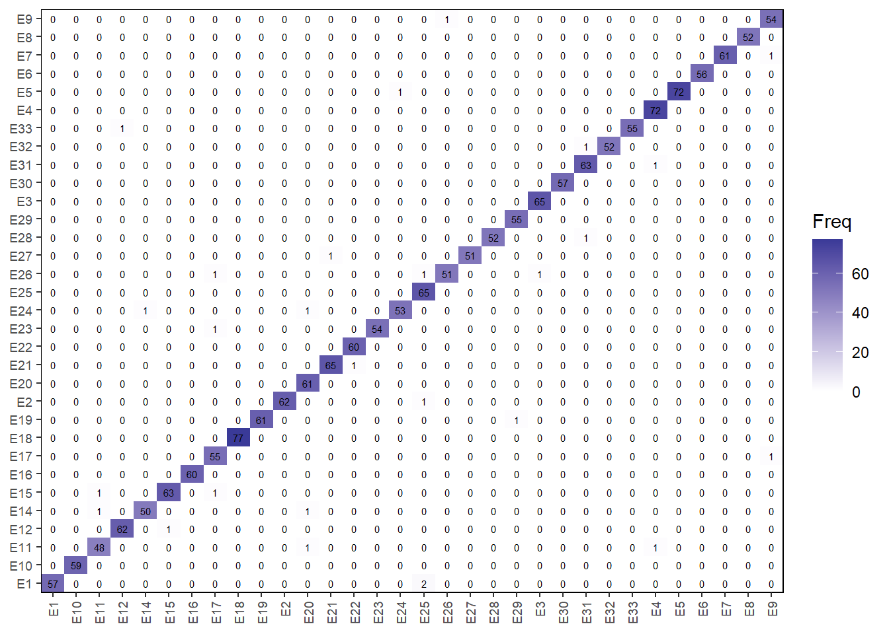

02: Identificação de espécies de plantas por análise de imagens: uma abordagem com Random Forest e características de forma e cor
1 Pacotes
2 Dados
img <- image_import("imgs/flavia/E8_1391.jpg")
plot(img)
ind <- image_index(img, "R")[[1]]
otsu(ind@.Data[!is.infinite(ind@.Data) & !is.na(ind@.Data)])
res <-
analyze_objects(pattern = "E",
dir_original = "D:/Desktop/UFSC/projetos/pesquisa/melhoramento_linhaca/linhagens_2023/68rbras/imgs/flavia",
index = "B",
watershed = FALSE,
efourier = TRUE,
fill_hull = TRUE,
parallel = TRUE,
object_index = "DGCI",
haralick = TRUE,
pcv = TRUE,
veins = TRUE,
workers = 4)
coefs <-
get_measures(res, digits = 10)[[1]] |>
as.data.frame() |>
separate_wider_delim(img, delim = "_", names = c("specie", "leaf"))
veins <- res$veins |> separate_wider_delim(img, delim = "_", names = c("specie", "leaf"))
df <- left_join(coefs, veins)
export(df, "data/flavia_rf.csv")3 Modelo RF
3.1 Cenário 1
df <- import("data/flavia_rf.csv")
# cenário 1
# sem escalas - somente com fatores de forma
c1 <-
df |>
select(-c(B1, C1)) |>
dplyr::select(specie,
# area, perimeter, radius_sd, major_axis, minor_axis, # scale-dependent
eccentricity, solidity, elongation, circularity_norm, form_factor, narrow_factor, # shape
# asm:f13, # texture
# DGCI, # color
# A2:D10,
# pcv,
# prop_veins
)
# best model
control <-
trainControl(method = 'cv',
p = 0.7,
number = 10,
verboseIter = TRUE)
fit1 <- train(specie ~ .,
data = c1,
method = 'rf',
tuneGrid = expand.grid(.mtry = 7),
trControl = control,
ntree = 300)
## + Fold01: mtry=7
## - Fold01: mtry=7
## + Fold02: mtry=7
## - Fold02: mtry=7
## + Fold03: mtry=7
## - Fold03: mtry=7
## + Fold04: mtry=7
## - Fold04: mtry=7
## + Fold05: mtry=7
## - Fold05: mtry=7
## + Fold06: mtry=7
## - Fold06: mtry=7
## + Fold07: mtry=7
## - Fold07: mtry=7
## + Fold08: mtry=7
## - Fold08: mtry=7
## + Fold09: mtry=7
## - Fold09: mtry=7
## + Fold10: mtry=7
## - Fold10: mtry=7
## Aggregating results
## Fitting final model on full training set
# trocar para os outros cenários
print(fit1)
## Random Forest
##
## 1907 samples
## 6 predictor
## 32 classes: 'E1', 'E10', 'E11', 'E12', 'E14', 'E15', 'E16', 'E17', 'E18', 'E19', 'E2', 'E20', 'E21', 'E22', 'E23', 'E24', 'E25', 'E26', 'E27', 'E28', 'E29', 'E3', 'E30', 'E31', 'E32', 'E33', 'E4', 'E5', 'E6', 'E7', 'E8', 'E9'
##
## No pre-processing
## Resampling: Cross-Validated (10 fold)
## Summary of sample sizes: 1720, 1715, 1721, 1712, 1717, 1719, ...
## Resampling results:
##
## Accuracy Kappa
## 0.8163229 0.8103049
##
## Tuning parameter 'mtry' was held constant at a value of 7
cm1 <- confusionMatrix.train(fit1, norm = "none")
statsc1 <- confusionMatrix(cm1$table)
stats_by_specie_c1 <-
statsc1$byClass |>
data.frame() |>
select(Precision, Recall, F1, Balanced.Accuracy) |>
desc_stat(stats = c("min, mean, max")) |>
mutate(cenário = "C1")4 Cenário 2
# cenário 2
# com escalas
# todas as variáveis de shape
c2 <-
df |>
select(-c(B1, C1)) |>
dplyr::select(specie,
area, perimeter, radius_sd, major_axis, minor_axis, # scale-dependent
eccentricity, solidity, elongation, circularity_norm, form_factor, narrow_factor, # shape
A2:D10,
pcv
# asm:f13, # texture
# DGCI, # color
# prop_veins
)
# best model
control <-
trainControl(method = 'cv',
p = 0.7,
number = 10,
verboseIter = TRUE)
fit2 <- train(specie ~ .,
data = c2,
method = 'rf',
tuneGrid = expand.grid(.mtry = 7),
trControl = control,
ntree = 300)
## + Fold01: mtry=7
## - Fold01: mtry=7
## + Fold02: mtry=7
## - Fold02: mtry=7
## + Fold03: mtry=7
## - Fold03: mtry=7
## + Fold04: mtry=7
## - Fold04: mtry=7
## + Fold05: mtry=7
## - Fold05: mtry=7
## + Fold06: mtry=7
## - Fold06: mtry=7
## + Fold07: mtry=7
## - Fold07: mtry=7
## + Fold08: mtry=7
## - Fold08: mtry=7
## + Fold09: mtry=7
## - Fold09: mtry=7
## + Fold10: mtry=7
## - Fold10: mtry=7
## Aggregating results
## Fitting final model on full training set
print(fit2)
## Random Forest
##
## 1907 samples
## 49 predictor
## 32 classes: 'E1', 'E10', 'E11', 'E12', 'E14', 'E15', 'E16', 'E17', 'E18', 'E19', 'E2', 'E20', 'E21', 'E22', 'E23', 'E24', 'E25', 'E26', 'E27', 'E28', 'E29', 'E3', 'E30', 'E31', 'E32', 'E33', 'E4', 'E5', 'E6', 'E7', 'E8', 'E9'
##
## No pre-processing
## Resampling: Cross-Validated (10 fold)
## Summary of sample sizes: 1720, 1719, 1717, 1712, 1717, 1715, ...
## Resampling results:
##
## Accuracy Kappa
## 0.9465769 0.9448249
##
## Tuning parameter 'mtry' was held constant at a value of 7
cm2 <- confusionMatrix.train(fit2, norm = "none")
statsc2 <- confusionMatrix(cm2$table)
stats_by_specie_c2 <-
statsc2$byClass |>
data.frame() |>
select(Precision, Recall, F1, Balanced.Accuracy) |>
desc_stat(stats = c("min, mean, max")) |>
mutate(cenário = "C2")5 Cenário 3
c3 <-
df |>
select(-c(B1, C1)) |>
dplyr::select(specie,
area, perimeter, radius_sd, major_axis, minor_axis, # scale-dependent
eccentricity, solidity, elongation, circularity_norm, form_factor, narrow_factor, # shape
A2:D10,
pcv,
asm:f13, # texture
DGCI, # color
prop_veins
)
# best model
control <-
trainControl(method = 'cv',
p = 0.7,
number = 10,
verboseIter = TRUE)
fit3 <- train(specie ~ .,
data = c3,
method = 'rf',
tuneGrid = expand.grid(.mtry = 7),
trControl = control,
ntree = 300)
## + Fold01: mtry=7
## - Fold01: mtry=7
## + Fold02: mtry=7
## - Fold02: mtry=7
## + Fold03: mtry=7
## - Fold03: mtry=7
## + Fold04: mtry=7
## - Fold04: mtry=7
## + Fold05: mtry=7
## - Fold05: mtry=7
## + Fold06: mtry=7
## - Fold06: mtry=7
## + Fold07: mtry=7
## - Fold07: mtry=7
## + Fold08: mtry=7
## - Fold08: mtry=7
## + Fold09: mtry=7
## - Fold09: mtry=7
## + Fold10: mtry=7
## - Fold10: mtry=7
## Aggregating results
## Fitting final model on full training set
print(fit3)
## Random Forest
##
## 1907 samples
## 64 predictor
## 32 classes: 'E1', 'E10', 'E11', 'E12', 'E14', 'E15', 'E16', 'E17', 'E18', 'E19', 'E2', 'E20', 'E21', 'E22', 'E23', 'E24', 'E25', 'E26', 'E27', 'E28', 'E29', 'E3', 'E30', 'E31', 'E32', 'E33', 'E4', 'E5', 'E6', 'E7', 'E8', 'E9'
##
## No pre-processing
## Resampling: Cross-Validated (10 fold)
## Summary of sample sizes: 1717, 1715, 1721, 1717, 1716, 1716, ...
## Resampling results:
##
## Accuracy Kappa
## 0.9816301 0.9810279
##
## Tuning parameter 'mtry' was held constant at a value of 7
cm3 <- confusionMatrix.train(fit3, norm = "none")
statsc3 <- confusionMatrix(cm3$table)
stats_by_specie_c3 <-
statsc3$byClass |>
data.frame() |>
select(Precision, Recall, F1, Balanced.Accuracy) |>
desc_stat(stats = c("min, mean, max")) |>
mutate(cenário = "C3")6 Juntando os resultados
7 Matriz de confusão cenário 3
ggplot(data.frame(cm3$table), aes(Prediction, Reference, fill = Freq)) +
geom_tile() +
labs(x = NULL,
y = NULL) +
scale_x_discrete(expand = expansion(0)) +
scale_y_discrete(expand = expansion(0)) +
scale_fill_gradient2() +
geom_text(aes(label = Freq),
size = 2) +
theme(panel.border = element_rect(color = "black", fill = NA),
axis.text = element_text( size = 7),
axis.text.x = element_text(angle = 90, vjust = 0.5,
hjust = 1))
ggsave("figs/confusion.jpg",
width = 5,
height = 5)8 Section info
sessionInfo()
## R version 4.3.3 (2024-02-29 ucrt)
## Platform: x86_64-w64-mingw32/x64 (64-bit)
## Running under: Windows 11 x64 (build 22631)
##
## Matrix products: default
##
##
## locale:
## [1] LC_COLLATE=Portuguese_Brazil.utf8 LC_CTYPE=Portuguese_Brazil.utf8
## [3] LC_MONETARY=Portuguese_Brazil.utf8 LC_NUMERIC=C
## [5] LC_TIME=Portuguese_Brazil.utf8
##
## time zone: America/Sao_Paulo
## tzcode source: internal
##
## attached base packages:
## [1] stats graphics grDevices utils datasets methods base
##
## other attached packages:
## [1] pliman_2.1.0.9000 metan_1.18.0 caret_6.0-94 lattice_0.22-5
## [5] performance_0.11.0 lubridate_1.9.3 forcats_1.0.0 stringr_1.5.1
## [9] dplyr_1.1.4 purrr_1.0.2 readr_2.1.5 tidyr_1.3.1
## [13] tibble_3.2.1 ggplot2_3.5.0 tidyverse_2.0.0 rio_1.0.1
##
## loaded via a namespace (and not attached):
## [1] mathjaxr_1.6-0 RColorBrewer_1.1-3 rstudioapi_0.16.0
## [4] jsonlite_1.8.8 magrittr_2.0.3 farver_2.1.1
## [7] nloptr_2.0.3 rmarkdown_2.26 ragg_1.3.0
## [10] vctrs_0.6.5 minqa_1.2.6 RCurl_1.98-1.14
## [13] base64enc_0.1-3 terra_1.7-71 htmltools_0.5.8
## [16] raster_3.6-26 pROC_1.18.5 parallelly_1.37.1
## [19] KernSmooth_2.23-22 htmlwidgets_1.6.4 plyr_1.8.9
## [22] mime_0.12 lifecycle_1.0.4 iterators_1.0.14
## [25] pkgconfig_2.0.3 Matrix_1.6-5 R6_2.5.1
## [28] fastmap_1.1.1 shiny_1.8.1.1 future_1.33.2
## [31] digest_0.6.35 numDeriv_2016.8-1.1 colorspace_2.1-0
## [34] GGally_2.2.1 mapview_2.11.2 patchwork_1.2.0
## [37] leafem_0.2.3 textshaping_0.3.7 crosstalk_1.2.1
## [40] labeling_0.4.3 randomForest_4.7-1.1 fansi_1.0.6
## [43] timechange_0.3.0 polyclip_1.10-6 abind_1.4-5
## [46] compiler_4.3.3 proxy_0.4-27 withr_3.0.0
## [49] tiff_0.1-12 DBI_1.2.2 ggstats_0.6.0
## [52] R.utils_2.12.3 ggforce_0.4.2 MASS_7.3-60.0.1
## [55] lava_1.8.0 leaflet_2.2.2 classInt_0.4-10
## [58] ModelMetrics_1.2.2.2 tools_4.3.3 units_0.8-5
## [61] mapedit_0.6.0 httpuv_1.6.15 future.apply_1.11.2
## [64] nnet_7.3-19 R.oo_1.26.0 satellite_1.0.5
## [67] glue_1.7.0 promises_1.2.1 nlme_3.1-164
## [70] EBImage_4.42.0 grid_4.3.3 sf_1.0-16
## [73] reshape2_1.4.4 generics_0.1.3 recipes_1.0.10
## [76] gtable_0.3.5 tzdb_0.4.0 R.methodsS3_1.8.2
## [79] class_7.3-22 data.table_1.15.4 hms_1.1.3
## [82] sp_2.1-3 utf8_1.2.4 BiocGenerics_0.46.0
## [85] ggrepel_0.9.5 foreach_1.5.2 pillar_1.9.0
## [88] later_1.3.2 splines_4.3.3 tweenr_2.0.3
## [91] survival_3.5-8 tidyselect_1.2.1 locfit_1.5-9.9
## [94] knitr_1.46 stats4_4.3.3 xfun_0.43
## [97] hardhat_1.3.1 timeDate_4032.109 stringi_1.8.3
## [100] fftwtools_0.9-11 yaml_2.3.8 boot_1.3-29
## [103] evaluate_0.23 codetools_0.2-19 cli_3.6.1
## [106] rpart_4.1.23 systemfonts_1.0.6 xtable_1.8-4
## [109] munsell_0.5.1 Rcpp_1.0.12 globals_0.16.3
## [112] png_0.1-8 parallel_4.3.3 gower_1.0.1
## [115] exactextractr_0.10.0 jpeg_0.1-10 bitops_1.0-7
## [118] lme4_1.1-35.2 listenv_0.9.1 ipred_0.9-14
## [121] lmerTest_3.1-3 scales_1.3.0 prodlim_2023.08.28
## [124] e1071_1.7-14 writexl_1.5.0 insight_0.19.10
## [127] rlang_1.1.3